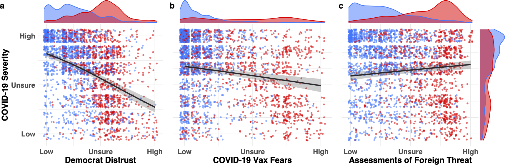

Surveyed over 2000 U.S. participants' beliefs about COVID-19 severity, political distrust, and medical skepticism prior to and during the first wave of cases
Identified two preexisting distrust types: medical and political
Bayesian models reveal that vaccine and political distrust existed prior to the pandemic’s first wave in the U.S.
Distrust expanded to include large medical organizations over the course of the pandemic
Medical misinformation targeted lingering anti-science views
Lingering distrust in Democratic politicians most strongly predicted COVID-19 skepticism during the first wave of cases

Histograms of three strongest predictors of prewave COVID-19 skepticism and their relation to political ideology.
Regression lines represent effect size estimates conditioned on the average response for the remaining predictors in the maximal model. Error regions represent 95% credible intervals (the interior 95% of the posterior distribution for the effect size). Participant-level averaged responses on the scales for those who identified as socially liberal (blue) and conservative (red) are jittered with kernel density plots representing the distribution of responses for each predictor. Responses of participants who identified as moderate were excluded from visualization but were included in the model. Horizontal density functions at top of each panel summarize distribution of responses by Democrats and Republicans on each predictor variable; vertical density functions at right summarize distribution of responses on the COVID-19 severity scale.
During the first wave of cases, COVID-19 skepticism became entrenched in a wider array of auxiliary beliefs
Histograms of five strongest predictors of first-wave COVID-19 skepticism and their relation to political ideology.
Regression lines represent effect size estimates conditioned on the average response for the remaining predictors in the maximal model. Error regions represent 95% credible intervals (the interior 95% of the posterior distribution for the effect size). Participant-level averaged responses on the scales for those who identified as socially liberal (blue) and conservative (red) are jittered, with kernel density plots representing the distribution of responses for each predictor. Responses of participants who identified as moderate were excluded from visualization but were included in the model. Scale labels are recoded for readability from the original 7-point Likert scale (Strongly Disagree = Low, Neither Agree nor Disagree = Unsure, Strongly Agree = High). Horizontal density functions at top of each panel summarize distribution of responses by Democrats and Republicans on each predictor variable; vertical density functions at right summarize distribution of responses on the COVID-19 severity scale.
Summary of survey findings
Two coherent belief networks emerged: one pro-science, one skeptical
Distrust in scientists and politicians predicted COVID-19 skepticism, even after controlling for partisanship
Beliefs were internally coherent, even if incorrect by scientific standards
Distrust expanded to include large medical organizations over the course of the pandemic
Medical misinformation targeted lingering anti-science views
üí° Why It Matters
People interpret scientific information through systems of beliefs. This study shows how belief systems update over the course of complex chains of events. Bayesian models fit to survey responses gathered prior to and during the first wave of cases demonstrate how internally coherent sets of beliefs can lead individuals to radically different conclusions about science, health, and public policy.
Public health use case: Understanding how belief systems shape vaccine hesitancy or mask resistance allows health organizations to design better communication strategies that account for underlying distrust and broader belief systems.
Research use case: A behavioral scientist modeling political narrative interaction can apply the modeling framework to explore how clusters of belief influence evidence assimilation, belief change, and reasoning about social issues.
üìä How the Study Was Conducted
Surveys administered in early 2020 allowed for identification of lingering belief networks shaping COVID-19 attitudes
Dates on which surveys were administered in relation to rolling 7-day average of reported COVID-19 cases in the U.S. during 2020. Visualization of cases was produced using Our World in Data COVID-19 data tracker at ourworldindata.org. Case data provided by the COVID-19 data repository at the Center for Systems Science and Engineering (CSSE) at Johns Hopkins University.
Survey questions were designed to probe a variety of beliefs related to COVID-19, political ideology, and medical distrust
Examples of questions on nine scales designed to assess attitudes related to COVID-19.
Survey Design:
Developed a 62-item belief inventory covering science, medicine, politics, and pandemic-specific topics (e.g., lockdowns, vaccines, mortality).
Participant Sample:
Recruited a nationally representative U.S. sample (N = 2,014) in April–May 2020 via YouGov.
Bayesian Coherence Modeling:
Used Bayesian multilevel models to evaluate how belief systems cohered within individuals and across the population.
Open Science:
All materials and data are available via Open Science Framework. You can download the following R script and survey data at the GitHub repository linked at the top of this project's page.
.PNG)